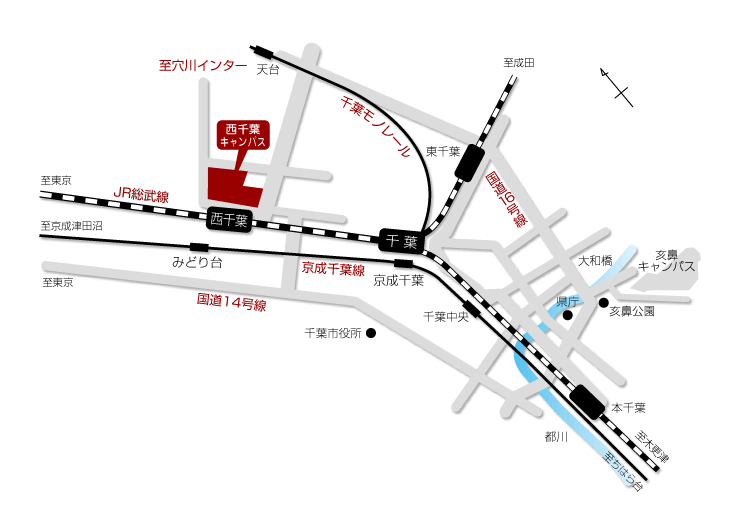
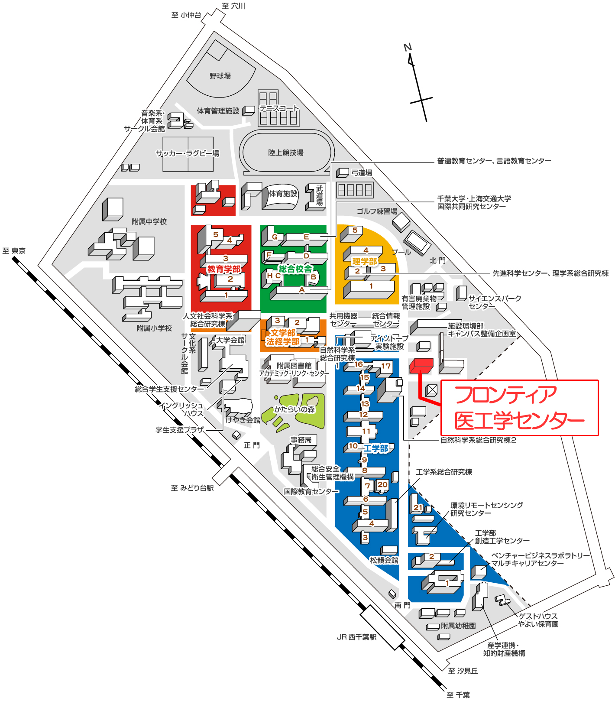

連絡先
所属：千葉大学フロンティア医工学センター
氏名：教授 中口俊哉
住所：〒263-8522 千葉市稲毛区弥生町1-33
電話/Fax： 043-290-3296（直通）
研究室へのアクセス
―― 千葉大学 西千葉キャンパス周辺地図 ――
―― キャンパスマップ構内図 ――
―― 交通手段 ――

▼ JR西千葉駅より西千葉キャンパス南門まで徒歩約2分 ▼ 京成みどり台駅より西千葉キャンパス正門まで徒歩約7分 ▼ 千葉都市モノレール天台駅より北門まで徒歩約10分